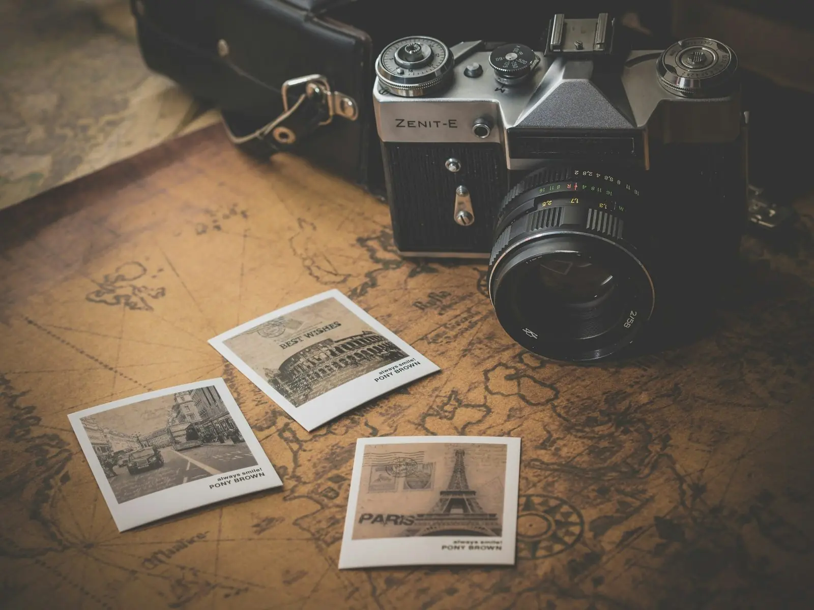
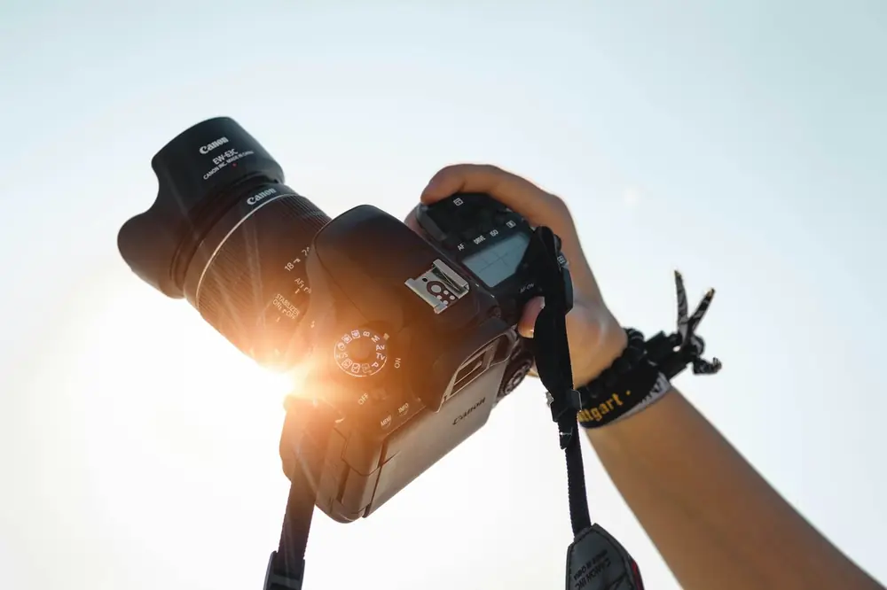

מדריכי צילום מעשיים מצלם דור שני, עם למעלה מעשור של עבודה בשטח. ללמוד בקצב שלך, מכל מקום.
כל מדריך מתמקד בנושא אחד, לעומק, עם דגשים שאפשר ליישם כבר בצילום הבא.
בלי מנויים ובלי התחייבות. רוכשים מדריך פעם אחת, והוא נשאר שלכם.
תוכן שנבנה מתוך עבודה יומיומית בסטודיו ובאירועים, עם דגש על מה שבאמת משנה את התמונה.
התשלום מתבצע ישירות במערכת של PayPal. פרטי האשראי שלכם לא עוברים דרך האתר.
לאחר התשלום המדריך נשלח אליכם באופן אישי לכתובת המייל שבחשבון ה-PayPal.

אני זיו, צלם דור שני ובעלים של Studio Image Photography בחיפה ובקריות. כבר למעלה מעשר שנים אני מצלם אנשים, אירועים ורגעים.
במדריכים אני מעביר את מה שלמדתי מאבי ומשנים של עבודה, בשפה ברורה ובצורה מעשית.